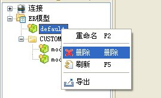
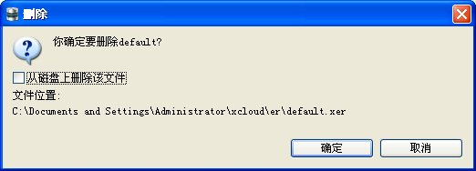
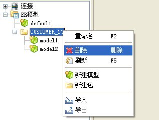
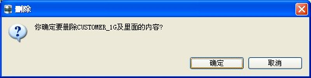
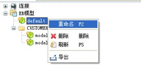
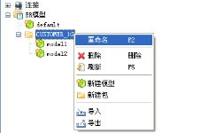
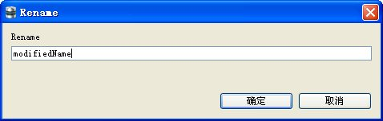

提供了删除ER模型文件和删除包的功能以方便管理。
选中指定要删除的ER文件，点击右键，弹出右键菜单，如图：

选择删除按钮，弹出确认对话框，如图：

在弹出的对话框可以选择是否只删除树节点还是连同文件一起删除，点击确定按钮，完成删除。在这时，对应该文件的树节点消失。
选中指定要删除的包，点击右键，弹出右键菜单，如图：

选择删除按钮，弹出确认对话框，如图：

点击确定按钮，成功删除。如果该包下还有其他模型文件，则连同这些模型文件一起删除。
提供了对ER模型文件和包重命名的功能以方便管理。
对ER模型文件和包进行重命名操作类似，都是对指定需要修改名称的文件或包右键点击，均可弹出右键菜单，如图：
 
选择重命名，弹出如下图的对话框：

输入修改后的名称，单击确定按钮，修改成功。